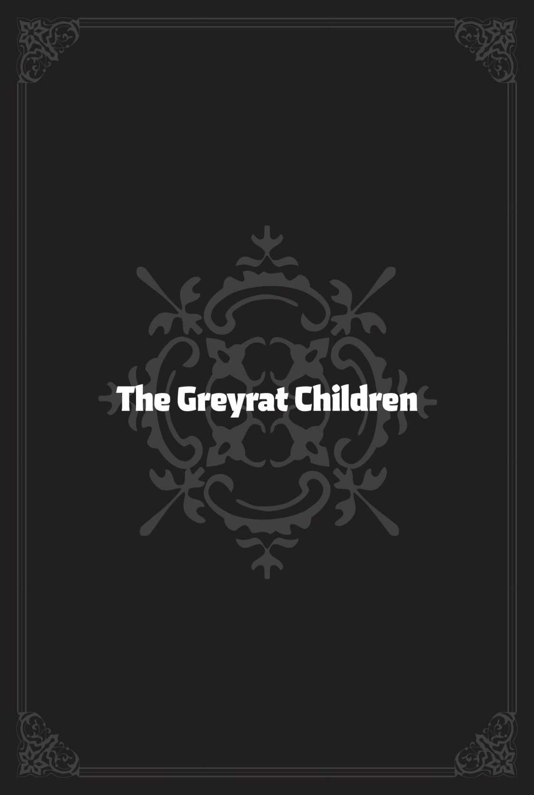
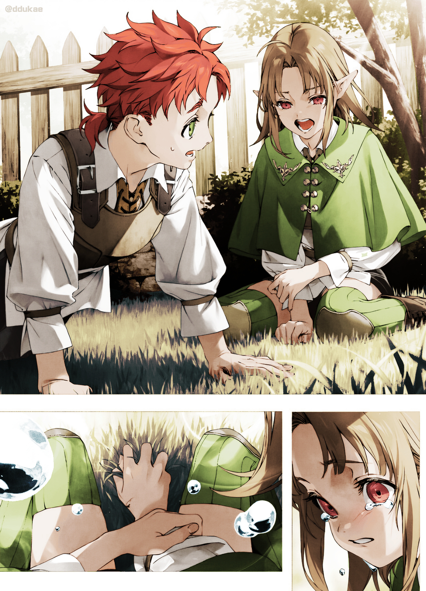

Bir dizi takırtı yankılandı. Ahşabın ahşaba çarparken çıkardığı net ses, nefes alışverişlerine karışıyordu.
“Off!”
“Hup!”
Greyrat evinin bahçesinde, ellerinde tahta kılıçlar olan iki genç karşı karşıya gelmişti. Biri kestane rengi saçlı bir kızdı. Yaşına göre şaşırtıcı bir vahşilikle kılıcını savuruyor, açısal momentumunu sonuna kadar kullanırken pelerini etrafında dalgalanıyordu. Dikkat çeken bir diğer şey, kılıcı tutmayan sol eliydi. Eli hafifçe açıktı ve ara sıra havayı tokatlamak için kullanıyordu. Bunu yaptığında, duvara çarpan bir top gibi sekiyordu, bu da hareketlerini tahmin etmeyi imkânsız kılıyordu. Yanlara doğru kıvrılarak, zaman zaman alçalıp yükselerek yaklaşıyor ve rakibine bir, iki iyi darbe indiriyordu. Sürekli değişen hareketleri hem tahmin edilemez hem de zarif ve güzeldi.
Rakibi, kızıl saçlı bir çocuktu ve üzerinde biraz kirli bir antrenman kıyafeti vardı. Kılıcını kararlılıkla kavramıştı. Kızın aksine hareketleri biraz daha katıydı. Onun gibi büyü kullanmak yerine sadece kılıcıyla onu savuşturmaya çalışıyordu. Ayaklarını yere sağlam basıyor, kızı savuştururken sabit ve güçlü duruyor, sonra cesurca karşılık veriyordu. Hareketleri Kılıç Tanrısı Stilini taklit ediyordu: temel, dolaysız bir teknik. Ayrıca kızdan daha hızlı vuruyordu. Buna rağmen ona hiç isabet ettiremiyordu. Bazen kız kaçıyor, bazen de saldırısını karşılayıp kritik bir açığı akıllıca değerlendirerek geri vuruyordu.
“Bu bir puan bana.”
“Daha değil!” Aralarındaki bariz beceri farkına rağmen çocuk yılmamış, tekrar kıza doğru koşmuştu.
Yakınlarda, diğer üç çocuk onları izliyordu, çoğunun gözleri dalgındı. Mavi saçlı bir kız ve yeşil saçlı bir çocuk yan yana oturuyordu, yanlarında ise sarışın bir çocuk ayakta duruyordu. Ayrıca büyük beyaz bir köpek de vardı. Mavi saçlı kız yüzünü köpeğin tüylerine gömmüş uyukluyordu. Dövüşle pek ilgileniyor gibi görünmüyordu.
Kestane saçlı kız ve kızıl saçlı çocuk bir süre daha karşı karşıya kaldılar, ta ki kız ileri atılana kadar.
“Yah!” diye vahşice bağırarak tahta kılıcını dosdoğru çocuğun alnına indirdi. Tatmin edici bir ‘tak’ sesi duyuldu.
“Ayyy!” Çocuk acıyla yerde yuvarlanırken, alnındaki yarıktan çenesine doğru parlak kanlar süzülüyordu.
“Eyvah, özür dilerim, tam isabet oldu.” Kız hızla yanına koştu ve tek kelime etmeden elini çocuğun alnına koydu. Yeşil bir ışık parladı ve yara kapandı.
“Ahhh,” diye iç geçiren çocuk, iyileştirme büyüsünü itirazsızca kabul etti. Kendini yere bıraktı. “Sana hâlâ rakip olamıyorum, Lucie.”
“Ne bekliyordun ki?” diye cevapladı kız. “Sen daha on yaşındasın, Arus.”
“Sadece üç yaş fark var…”
“Üç yaş yeterince büyük bir fark. Sieg’e karşı kaybetmezdin, değil mi?”
Bunlar Lucie ve Arus’tu. Milis’ten döndüğünden beri Arus, kendini eskisinden daha büyük bir yoğunlukla kılıç antrenmanlarına vermişti. Eris bütün çocuklara kılıç sanatını öğretiyordu, ama Arus dövüşme hevesine kapıldığından beri gururla dolup taşmış ve bildiği her şeyi ona öğretmek için büyük çaba sarf etmişti. Arus’un yeteneği boldu, bu yüzden özel ilgi görüyordu. Eris’in öğrettiği her şeyi kapıyor ve tam teşekküllü bir kılıç ustası olma yolunda ilerliyordu—ama bundan daha azı ona yeterli gelmiyordu. İşte bu yüzden Arus, çocuklar arasında bunun gibi gizli antrenman seansları düzenlemeye başlamıştı.
Eris muhtemelen, dövüş tecrübesi edinmeyi düşünmeden önce kılıç savuruşunun daha fazla çalışılması gerektiğini söylerdi, ama Arus onun oğluydu—sadece kılıç sallamayı sıkıcı buluyor ve bir partner istiyordu. Eris de onun yaşındayken böyleydi, bu yüzden bu çok doğaldı.
“Hey, Lucie,” dedi Arus, “elinden rüzgâr fırlatıp dönerek yaptığın o şeyde çok iyisin. Beyaz Anne mi öğretti?”
“Hayır. Babanın eskiden yaptığını duymuştum, kendi kendime öğrendim.”
“Vay canına. Sence baba da böyle mi dövüşüyordur?”
“Muhtemelen şimdi değil. Çocukken yaptığını söylemişti.”
“Sence ben de denemeli miyim?”
“Hmm,” diye düşündü Lucie. “Bence sen Kılıç Tanrısı tekniğini geliştirmeye odaklansan daha iyi olur. Benim yaptığım şey gerçek kılıçlarla yapılan ciddi bir dövüşte yeterince güçlü olmaz. Kılıç antrenmanı yapmıyor olsaydım bunu yapmazdım. Yani, ben bir büyücüyüm.”
“Ama çok havalı. Lucie’nin büyülü kılıç sanatı! Clive da çok etkilenmişti, biliyorsun.”
“Mm…” Lucie oralı olmamış gibi davrandı, ama göz ucuyla izleyicilerin arasındaki sarışın çocuğa baktı; çocuk, yanında oturan Sieg ile neşeyle sohbet ediyordu.
Adı Clive’dı. O da bir akrabaydı, bu yüzden zaman zaman sadece çocukların katıldığı bu gizli antrenmanlara takılıyordu. Lucie’nin antrenman yapmalarına rağmen üniformasının üzerine en sevdiği pelerinini giymesinin ve kılıcına odaklanmak yerine pelerininin dalgalanması için büyü kullanmasının sebebi buydu. Bir rüzgâr perisi gibi görünmek istemişti—bir sylph, babasının ona uzun zaman önce anlattığı bir masaldaki dört büyük ruhtan biri. Babası, güzel sylph’in yeşil saçları olduğunu ve havada dans ederek daima rüzgâra büründüğünü söylemişti.
Lucie okuldaki arkadaşlarıyla konuştuğunda, böyle bir şey hiç duymadıklarını söylemişlerdi. Öğretmenlerine sorduğunda onlar da bir şey bilmiyordu. Kütüphaneyi talan etmiş ama bu isme dair hiçbir şey bulamamıştı. O ana kadar sylph’in gerçek olduğuna inanmıştı. Meğer sylph de en az Cheddar Adamı kadar hayal ürünüydü—ne büyük bir şok! Yine de Lucie hâlâ rüzgâr perilerine hayrandı ve hoşlandığı çocuğun onu o şekilde görmesini hayal ediyordu.
“Bu kadar yeter. Şınav!” diye bağırdı Lucie. “Kaybedenin şınav çekeceği konusunda anlaşmıştık, hatırladın mı?”
“Off ya.” Arus, Lucie’nin önünde şınav pozisyonu aldı ve sonra bağırarak başladı: “Bir! İki…!”
Bu, çocukların gizli antrenmanlarının bir kuralıydı: kaybeden temel bir egzersiz yapmak zorundaydı.
“Tamam, sıradaki sensin, Lara! Acele et!”
Kaybeden egzersizlerini yaparken bir sonraki rakibin ortaya çıkması gerekiyordu, ama Lara uykulu bir şekilde, “Zaten beş tur yaptın. Biraz ara verelim,” dedi.
Leo’ya yaslanmış, dövüşmekle ilgilenmiyordu, gerçi dürüst olmak gerekirse uyuyormuş gibi yaparak onları görmezden gelmesi daha iyiydi. Son derece yetenekli bir büyücü olan Lara, rakiplerini alt etmek için kurnazlığını kullanarak dövüşürdü. Öte yandan, konu kılıç sanatı olduğunda hiç motive değildi. Bu, hareket etmeyi sevmediği anlamına gelmiyordu; kendi muzipliklerinin peşindeyken oldukça enerjikti. Sadece kılıç dövüşü ona göre değildi.
Yine de, ne kadar isteksiz olsa da gelmişti. Belki de kendine göre sebepleri vardı.
“Peki ya sen, Sieg?”
“Mm, ben de pas geçiyorum.” Sieg sadece sekiz yaşındaydı ve dördü arasında en düşük kazanma oranına sahipti. Bununla birlikte, yaşına göre inanılmaz bir gücü vardı ve dövüş başa baş gittiğinde, bu gücün onu zafere taşıdığı anlar oluyordu. Onun stili de Lucie ve Arus’tan farklıydı. Tıpkı Arus gibi onun dövüş stili de kılıç oyununa öncelik veriyordu, ama zaman zaman Eris’in onlara öğrettiğinden açıkça farklı şekillerde hareket ediyordu.
Elbette, diğer üçü ona kılıç sanatını kimin ve nerede öğrettiğinin farkındaydı.
“Peki, mola zamanı,” dedi Lucie. Hâlâ şınav çeken Arus’un yanına oturdu. Clive’ın yanına gitmek kelimelerle ifade edilemeyecek kadar utanç verici olurdu. Hayatının o dönemindeydi. Ayrıca, tam o anda Clive, Sieg ile konuşuyordu. Lucie ne dediklerini bilmiyordu ama yaşına göre sakin olan Clive, son derece bilgiliydi ve onunla konuşmak ilginçti. Muhtemelen son zamanlarda okuduğu herhangi bir kitapla Sieg’i eğlendiriyordu.
“Hey, Lucie,” dedi Arus aniden şınav çekmeye devam ederken, “Okulu bitirdikten sonra ne yapacaksın?”
“Bir sonraki okula gideceğim,” diye umursamazca cevap verdi Lucie, Arus’un ciddi sorusuna. “Babanın dediği gibi. Ranoa Büyü Üniversitesi’nden mezun olduktan sonra Asura Kraliyet Akademisi’ne başlayacağım. Oraya neden gitmem gerektiğini bilmiyorum ama sanırım Asuralı soylular olduğumuz için soyluluk hakkında bir şeyler öğrenecekmişim.”
“Hayır, ondan sonrasını kastediyorum.”
Lucie tekrar Arus’a baktı. Çocuk şınav çekmeye devam ederken gözleri yerdeydi.
“Babanın izinden gideceksin, değil mi?” diye sordu ona.
“Bilmiyorum ama annelerimiz öyle söylüyor.”
Bunu çoğunlukla Eris söylüyordu. Arada bir, “Arus, Greyrat varisidir!” diye ilan ederdi. O zamandan beri öyle olduğu varsayılmıştı. Sylphie ve Roxy’nin bu durumla bir sorunu yok gibiydi. Ne yapması gerektiği ise belli değildi. Rudeus gibi Orsted için mi çalışacaktı?
“‘Bilmiyorum’ ne demek? Arus, herkes senin varis olmanı bekliyor. Ve Lara’nın da önemli bir rolü olması gerekiyormuş. Bu ciddi bir konu.”
“Madem öyle düşünüyorsun, neden sen varis olmuyorsun? Kılıç dövüşünde ve büyüde bizden daha iyisin.”
“Değilim. Kimse benden bir şey beklemiyor.”
“Bu doğru değil,” diye ağzından kaçırdı Arus.
“Doğru!” dedi Lucie, sesi yükselerek. “Babam bana bir kez bile benden bir şey beklediğini ya da gelecekte ne yapmamı istediğini söylemedi. Öyle bir şey yok! Siz ikiniz doğum günlerinizde kılıçlar ve büyü asaları aldınız, ama ben… ben…!”
Sadece Arus değil, onlardan uzakta duran diğer üçü de gözleri fal taşı gibi açılmış ona bakıyordu. Anında bir utanç dalgası hissetti. Bütün bunları küçük kardeşine de ne diye söylüyordu ki? Babası ondan bir şey beklemiyordu çünkü yeterince sıkı çalışmıyordu. Olay bu kadar basitti.
“Ah…!” Lucie’nin gözleri doldu. Ağlamak hiçbir işe yaramayacaktı ama gözyaşları yine de yanaklarından süzülüyordu. Babası neden ondan bir şey beklemiyordu? Bunu hiç anlamamıştı. Hem kılıç sanatında hem de büyüde çok çabalıyordu. Okulda iyi notlardan başka bir şey almıyordu. İyi bir ablaydı, ama babası ona bir kez bile ne yapmasını istediğini ya da ne olmasını istediğini söylememişti. Onu her zaman, istediği hayatı yaşaması gerektiğini ya da en büyük olduğu için bu konuda endişelenmesine gerek olmadığını söyleyerek geçiştirirdi.
“B-baba bana bir şey beklediğini söylemedi ki,” diye kekeledi Arus, çaresizce etrafına bakınarak. Ona göre ablası mükemmeldi.
Kardeşleri arasında en başarılısı oydu. Ondan tam üç yaş büyük olması, onu bir yetişkin gibi gösteriyordu. Arus, onun kendi yaşındayken yapabildiği şeyleri yapamıyordu ve küçük kız kardeşleri Lily ve Chris’e nasıl bakacağını da bilmiyordu. Kılıç sanatı dışında, Lucie’den daha iyi yaptığı hiçbir şey olduğunu düşünmüyordu. Onda bile, ablası büyü kullandığında bir deneme maçında onu yenemiyordu. Eğer kimse Lucie’den bir şey beklemiyorsa, kesinlikle diğer çocuklardan da hiçbir şey beklemiyorlardı.
Ama eğer babası gerçekten Lucie’den bir şey beklemiyorsa, bu Arus’tan da bir şey beklemediği anlamına gelmez miydi? Babası Arus’a asla varisi olmasını istediğini söylememişti. Bunu bir nevi varsayıyordu çünkü Kızıl Anne ve Aisha böyle söylüyordu ve diğer anneler de onların yalan söylediğini belirtmiyordu. İşler böyle yürürdü. Asuralı soylularda en büyük erkek çocuk varis olurdu.

Normalde, biri onunla Lucie’nin konuştuğu gibi konuşsa, Arus ateşli bir karşılık verirdi. Dışarıdan sinirli görünmese bile içten içe köpürürdü; bu onun doğasıydı. Ama Lucie’nin daha önce hiç böyle konuştuğunu duymamış, onu hiç bu kadar üzgün görmemişti. Lara ona bir şaka yaptığı için sinirlendiğinde, sanki rol yapıyor gibiydi, sadece Lara’yı azarlayacak kadar kızgın kalıyordu. Lucie mükemmel bir ablaydı. Duygularını asla dışa vurmayan, hiç kötü bir şey yapmayan, sızlanmayan ya da şikâyet etmeyen o son derece havalı tiplerdendi.
“Hey, şey, Lucie?” Arus, bu patlamaya öfkelenmekten çok kafası karıştığı için tereddüt etti. Nasıl cevap vereceğini bilmiyordu. Eğer bu, ağız dalaşı yapmaya alışkın olduğu Lara ya da Sieg olsaydı, bir şeyler söylerdi ama şimdi ne yapması gerekiyordu?
O sırada Clive yanlarına gelip Lucie’nin yanına oturdu. “İyi misin, Lucie?”
Lucie sessizdi. Diğer çocuk Arus’tan sadece bir yaş büyüktü ama çok daha olgun görünüyordu. Çalışkandı ve okulda iyi notlar alırdı, ayrıca nazikti ve insanlarla arası iyiydi—gerçi gerektiğinde kendinden küçük öğrencilere karşı katı olabiliyordu. Kendiyle aynı yaşta olan Lara’dan çok daha yetişkin duruyordu.
“Hepimiz ne kadar çok çalıştığını biliyoruz,” dedi Clive.
“Mm.” Lucie burnunu çekti. Clive bir kolunu onun omzuna atıp başını okşadı.
“Daha sonra Arus’tan özür dilersin, değil mi?”
“Hayır, şimdi daha iyi.” Lucie burnunu bir kez daha çekti, sonra şınav pozisyonunda donakalmış Arus’a dönüp başını eğdi. “Özür dilerim, Arus. Kaba davrandım.”
“Hayır! Yani… ben de özür dilerim,” dedi. Ne hata yaptığından emin değildi, ama birinin ona bir kızı ağlatırsa özür dilemesi gerektiğini söylediğinden oldukça emindi. Belki Mavi Anne ya da Beyaz Anne’ydi. Aisha olabilir miydi? Her halükârda, Lucie’ye okulu bitirdikten sonra ne yapacağını sormamalıydı. Sadece merak etmiş ve havalı ablasının gelecek için aklında ne olduğunu duymak istemişti. Belki de onun mükemmel-abla cevabından kendisi için bir fikir edineceğini ummuştu. Milyon yıl düşünse onun kendisine böyle bağıracağı aklına gelmezdi.
“Kusura bakma, Arus,” dedi Clive. “Ben Lucie’yi alıp eve döneyim.”
“Ah, şey, evet. Tamam.”
Clive, kolu Lucie’nin omuzlarında, içeri girdi.
Geride kalan Arus’un dili tutulmuştu. Sadece donakalmış, inanamaz bir halde duruyordu. Tam o sırada, Lara ve Sieg, Lucie ile Clive’ın olduğu yere geldiler. Leo da endişeli bir ifadeyle onlara katıldı.
“Bu biraz ağırdı,” dedi Lara.
“Lucie’nin böyle sinirlenebildiğini bilmiyordum,” diye katıldı Sieg.
Arus, erkek ve kız kardeşiyle yakındı ve onlarla konuşmak genellikle bir şeyler hakkında düşünmesine yardımcı olurdu. Başını salladı. “Sanırım, bilmiyorum, Lucie de gelecek hakkında endişeleniyor olmalı.”
Lucie’nin herhangi bir şey için endişelenemeyecek kadar mükemmel olduğunu varsaymıştı. Belli ki öyle değildi.
Lara ağzını açtı. “Lucie…” diye başladı.
Arus, ablalarından küçük olanının ne düşündüğünü asla bilemezdi, ama bazen öyle bir şey söylerdi ki tam meselenin özüne dokunurdu. Arus önemli bir şeyi kaçırmamak için dikkatle dinledi.
“…kesinlikle Clive’la evlenecek,” dediği tek şey bu oldu.
“Ah, doğru,” diye başını salladı Arus, hayal kırıklığına uğramış hissederek. Lara aynı sıklıkla yavan bir şey de söylerdi. Arus ve diğerleriyle aynı şeylerle ilgilenmiyordu. O kendi dünyasındaydı.
“Konumuz bu değildi,” dedi Sieg.
Ama Lara henüz bitirmemişti. “Clive tek çocuk, yani evlendiklerinde Lucie Millis’te yaşayacak.”
Şimdi onun akıl yürütme şeklini anladığı için, ne demek istediğini biliyordu. “Yani, evlendiğinde gidiyor mu?”
“Aynen,” dedi Lara.
Onların ailesi ve Clive’ın ailesi Grimorlar, akraba olmalarının da yardımıyla iyi geçiniyorlardı. Arus nedenini tam olarak anlamıyordu ama soylu aileler daha güçlü bağlar kurmak için çocuklarını birbirleriyle evlendirirlerdi. Büyükler şimdiden Lucie ve Clive için planlar yapıyor olabilirdi. “Nişanlı” olacaklardı.
“Sence Lucie bu durumdan mutsuz mu?” diye sordu Arus.
“Bahse girerim bu duruma kızgın değildir.”
“Evet, Clive’dan hoşlanıyor ama o zaman neden öyle bağırdı ki?”
“Kızlar karmaşıktır.”
Arus kendini epey kaybolmuş hissetti. Lucie belli ki bir şeyden mutsuzdu. Hatta Greyrat varisi olması gereken kişinin kendisi olduğunu düşünüyor gibiydi. Gerçi bu belki de kendi yetersizliğinin bir yansımasıydı ama Arus da bunu hak edenin o olduğunu düşünüyordu.
Daha sonra bunu Aisha’ya sorarım diye düşünerek konuyu değiştirmeye çalıştı. “Peki ya sen, Lara?”
“Yemek yapacak, temizlik yapacak ve diğer her şeyi halledecek becerikli bir adamla evleneceğim, böylece bütün gün tembellik edebileceğim.”
“‘Evleneceğim’ mi? Dur bakalım, biriyle nişanlı mısın?”
“Hayır.”
“Ah.” Ona böyle birini nerede bulmayı düşündüğünü sormak istedi ama kendini tuttu.
“Çok zor olmayacak,” diye ekledi Lara.
“Tabii. Bol şans.” Daha az havalı olan ablası sinirine dokunmaya başlamıştı, bu yüzden küçük kardeşine döndü. “Peki ya sen, Sieg?”
Sieg elindeki tahta kılıca baktı. “Dünyanın en güçlü kılıç ustası olacağım.” Lara’dan bile daha saçma konuşuyordu. “En güçlü olduğumda, dünya barışını koruyacağım.”
Evet, Sieg Cheddar Adamı’nı ve Kuzey Tanrısı Destanı’nı seviyordu, ama Arus bebek hayalleri hakkında değil, ciddi şeyler hakkında konuşmaya çalışıyordu. İç çekti ve, “Önce beni yenmeyi dene bakalım,” dedi.
“Yeneceğim.”
“Öyle mi? Ne zaman?”
“Bir gün!”
“Peki, acele etme, ama bunu yapana kadar kendine en güçlü deme!”
Sieg surat asarak yanaklarını şişirdi. Arus bir süre daha Sieg’e yenileceğini düşünmüyordu ama kardeşi günden güne güçleniyordu. Şu anda saçma görünse de Sieg gerçekten bir gün onu yenebilirdi. Belki de Sieg’in kahramanlık hayalleri o kadar da çocukça değildi. Elbette, Arus’u yenmek Sieg’i en güçlü yapmazdı. Dışarıda bir sürü ciddi anlamda güçlü kılıç ustası vardı.
“Varis olmak istemiyor musun?” diye sordu Sieg aniden.
Arus ağzını büzdü ve mırıldandı, “Nereden bileyim?”
Greyrat ailesinin varisiydi… ama bunun iyi mi kötü mü olduğu da dahil olmak üzere ne anlama geldiğinden emin değildi. Ancak, konuşmaları ona bu konuda farklı bir bakış açısı kazandırmıştı. Greyrat ailesi Ejderha Tanrısı Orsted’e hizmet ediyordu, ama aynı zamanda Asuralı soyluların bir koluydu. Ailenin varisi olmak, diğer soylularla iç içe olmak anlamına gelirdi. Bu, Lucie’nin sadece Ranoa Büyü Üniversitesi’ne değil, aynı zamanda Asura Kraliyet Akademisi’ne de gitmek zorunda olduğu hakkındaki sözleriyle örtüşüyordu.
“Hmm.” Zaten soylular ne yapardı ki? Arus, cevabı okulda öğreneceğini tahmin ediyordu ama şimdilik bu bir gizemdi. Aileler arasındaki bağlar önemliydi, belki de tanımadığı bir kadınla evlenmek zorunda kalacaktı.
Sonunda, “Sanırım pek istemiyorum,” dedi. Arus’un hoşlandığı belli tipte kızlar vardı, bu yüzden sırf evlenmek için herhangi biriyle evlenmek istemiyordu. Aslında, itiraf edemeyecek kadar utansa da, şimdiden hoşlandığı biri vardı.
Yine de, eğer bu zaten kararlaştırılmış bir şeyse, istemediği konusunda yaygara koparamazdı. Lucie bu yüzden ona kesinlikle kızardı. ‘Ben bütün bunlara katlanıyorum,’ derdi, ‘seni bu kadar özel kılan ne de bundan kaçabiliyorsun?’ Başka hiçbir şey olmasa bile, en iyi varis olmak için her şeyini ortaya koymazsa Lucie mutsuz olurdu, ama bunu nasıl yapacağını bilmiyordu. Onun kendisinden nefret etmesini istemiyordu.
Eğer sorarsa Aisha ona ne yapması gerektiğini söyleyebilirdi, ama on yaşına girdiğinden beri ona neredeyse hiç net bir cevap vermiyordu. Genellikle ona sadece bir ipucu verir ve sonra kendi başına düşünüp çözmesini söylerdi—ki bu, Arus’un iyi olmadığı bir şeydi. Millis’e gittikten sonra çok düşünmüş ve biraz daha derin düşünmeye başlamıştı, ama zorlanıyordu. Aklı hemen bir şeyleri kılıcıyla ya da büyüsüyle çözmeye gidiyordu.
Arus sessizce ellerine baktı. Lucie’nin büyüsü çok güzeldi ve onu ustalıkla kullanıyordu. Sadece basit bir rüzgâr büyüsü olmasına rağmen çok etkiliydi. Tıpkı onun gibi sürekli değişiyor ve şekil alıyordu. O güçlüydü. Eğer Arus o büyüyü öğrenebilirse, o da güçlü olabilirdi.
“Pekâlâ,” dedi kararlılıkla. Hâlâ ne yapması gerektiğinden emin değildi, ama bugünlük Lucie’yi taklit etmeye çalışacaktı. Hâlâ düşünerek, Arus elinde kılıcıyla ayağa kalktı.